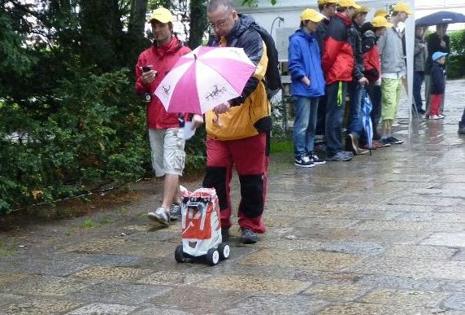

<meta charset="utf-8">
<meta name="viewport" content="width=device-width, initial-scale=1">
<title>ARBot – Robotem rovně 2012</title>
<link rel="icon" href="../assets/img/arbot-logo.png">
<link rel="preconnect" href="https://fonts.googleapis.com">
<link rel="preconnect" href="https://fonts.gstatic.com" crossorigin>
<link rel="stylesheet" href="https://fonts.googleapis.com/css2?family=Archivo:wght@500;600;700&amp;family=JetBrains+Mono:wght@400;600&amp;family=Newsreader:opsz,wght@6..72,400;6..72,500;6..72,600&amp;display=swap">
<link rel="stylesheet" href="../assets/site.css">

<header class="sitehead">
  <a class="brand" href="../index.html"><span>ARBot</span></a>
  <nav>
      <a href="../index.html">Úvod</a>
      <a href="../pages/prezentace.html">Jak to funguje</a>
      <a href="../pages/historie.html">Historie</a>
      <a href="../pages/umisteni-v-soutezich.html" class="on">Umístění v soutěžích</a>
      <a href="../pages/verze.html">Verze</a>
      <a href="../pages/technicke-clanky.html">Technické články</a>
      <a href="../pages/kontakt.html">Kontakt</a>
  </nav>
</header>
<main>
  <div class="pagehead">
    <p class="eyebrow">Robotem rovně &middot; 2012</p>
    <h1>Robotem rovně 2012</h1>
  </div>

<section class="first">
  <p>Letošnímu ročníku oblíbené robotické soutěže nepřálo počasí. Jak říká klasik „Chčije a chčije“. Robot byl navlečen do pláštěnky z igelitové tašky a pro jistotu byl ještě doplněn inteligentním nosičem deštníku.</p>

  <p>Hmed od homologace robot z nejasného důvodu táknul doprava. Jediné co bylo možně rychle udělat bylo upravit bajvoko deklinaci kompasu a hurá do prvního kola. Bohužel po 33 metrech robot vjel do travy. Jen tak mimo soutěž následoval posun robota na střed cesty a restart. Ejhle robot dojel až do cíle.</p>

  <p>Do druhého kola jsem znovu upravil deklinaci kompasu a robot tentokrát dojel na znacku 75 metrů. Po restartu opět dojel až do cíle. Zajímavé bylo, že největší odchylka směru byla hned na startu. Že by nějaké porušení magnetického pole? Že by to způsoboval ten vobrovskej reprák po pravé straně?</p>

  <figure>
    
    <figcaption>Robot v pláštěnce a „inteligentní nosič deštníku“.</figcaption>
  </figure>

  <p>Třetí kolo probíhalo dle známého scénáře. Úprava deklinace, start a vyjetí po 80 metrech. Nebudu to dál natahovat. Valnou část problému s kompasem jsem si způsobil sám. Kompas jsem kalibroval bez namontovanýho displeje, na kterým je malinkej repraček a tím se to celé rozhodilo.</p>

  <p>Celkové 6. místo bylo určitě pod očekáváním, na druhou stranu nový lokalizační algoritmus dokázal robota udržet na cestě i přes chybu údaje kompasu.</p>

  <p>Organizátoři odvedli skvělý výkon, účast byla hojná a tak jediné co se nepovedlo bytlo to počasí.</p>
</section>

<section>
  <p><a href="umisteni-v-soutezich.html">&larr; Zpět na Umístění v soutěžích</a></p>
  <p class="mono" style="font-size:13px;color:var(--muted)">Text a obrázky jsou převzaté z původního webu na Google Sites; znění článku je beze změn.</p>
</section>

<footer>
  <div class="foot-in">
    <span class="mono">ARBOT &middot; AUTONOMNÍ MOBILNÍ ROBOT</span>
    <span>Zdrojový kód, vývojová dokumentace a měření:
      <a href="https://github.com/AlesRuda/ARBot3">github.com/AlesRuda/ARBot3</a></span>
  </div>
</footer>
</main>
